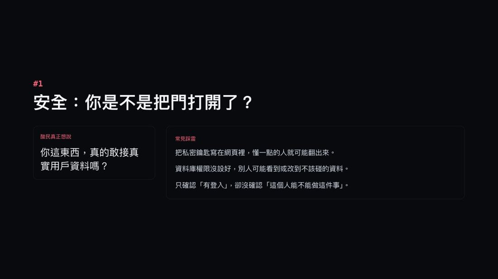
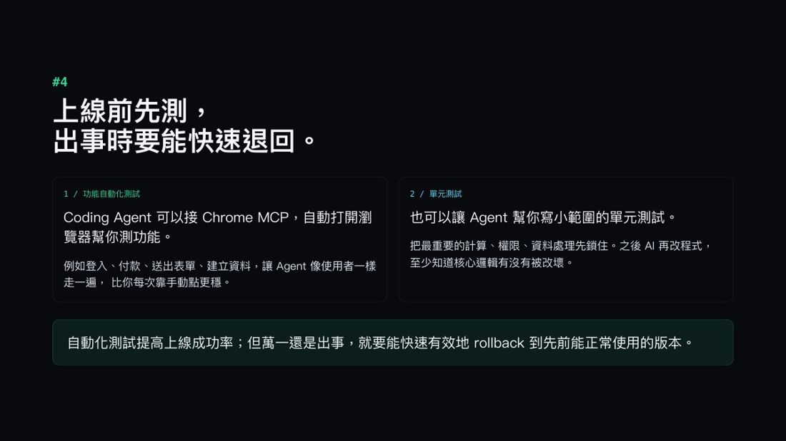
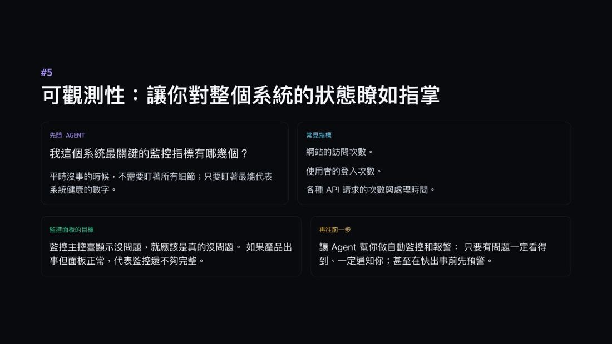
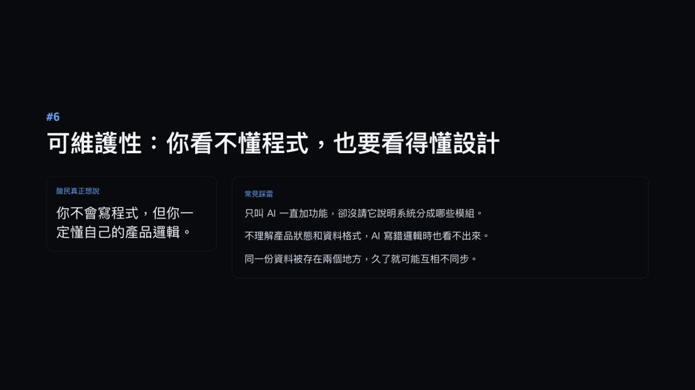
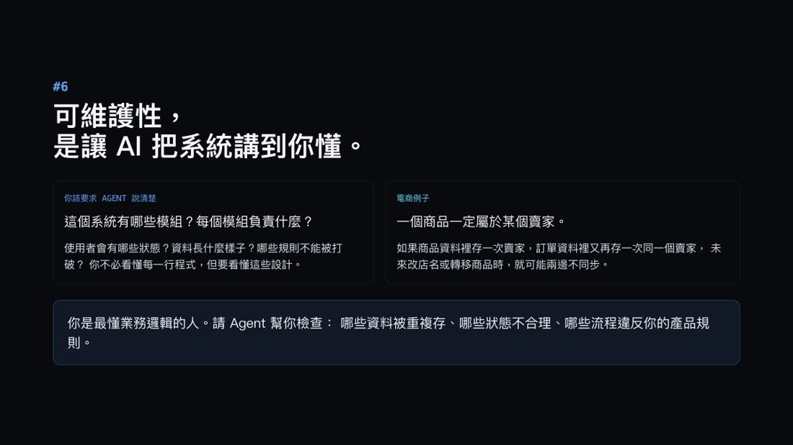

01
大綱總結（1 分鐘看完全場）
整場就是一張檢查表：你的作品要從「玩具」變成「真的能給人用」，還差這六件事。
| # | 維度 | 酸民真正想說的是 | 時間 |
|---|---|---|---|
| 1 | 安全 | 你這東西，真的敢接真實用戶資料嗎？ | 3:24 |
| 2 | 可擴展性 | 不是能不能跑，是適合讓多少人同時跑。 | 6:00 |
| 3 | 資料可靠性 | 你有沒有想過，資料一旦寫錯要怎麼救？ | 8:35 |
| 4 | 上線成功率 | 下一版能不能正常用，你是測過，還是希望？ | 11:11 |
| 5 | 可觀測性 | 不是會不會壞，是壞了多久才有人知道。 | 13:49 |
| 6 | 可維護性 | 你不會寫程式，但你一定懂自己的產品邏輯。 | 17:46 |
兩個小撇步：① 內文有 底線加問號 的詞是專有名詞，點了跳到最下面小辭典。② 每張圖左邊綠色的 ▶ 時間 可以點，會開課程頁——這是要登入的平台，開了要自己把進度條拉到那個時間。
③ 這份報告收錄了講者給的全部 18 組 Prompt，可以直接複製去問你的 AI。
02 · ▶ 0:00–3:23
這場在講什麼？
講者是 Zeabur 的創辦人。他說這題目來自十年前的自己——剛學會寫程式時問老師：「我寫的這個 Hello World，跟我每天在手機上用的那些程式，差在哪？」
今天換成 AI 時代：你沒寫過程式，用 Claude Code 做出一個比 Hello World 複雜得多的東西——它跟我們每天在用的正式服務，還差多少？
他先幫「酸民」講句公道話。你在社群分享作品，底下常有人說「這就是小玩具啦」「做 prototype 就夠了不要拿出來」「笑死誰敢把個資放你程式裡」。
講者說：撇除純粹的惡意，這些人很多時候是想提醒你一些他自己的經驗。所以這場就是把那些「他們沒講清楚的擔心」一條一條展開。
但開場先講一句最重要的話
有經驗的架構師，厲害的不是全都做好，而是「知道現在這個階段該做到哪一步」。
講者特別提醒：如果在根本還沒人用的情況下，花一整個月做出超強超安全的東西，最後沒人用——這反而是不成熟的表現。
「今天講的每個概念什麼時候該做、做到什麼程度，是要用經驗慢慢體會的。」
03 · ▶ 3:24–5:59
安全：你是不是把門打開了？

| 踩雷 | 白話 |
|---|---|
| 金鑰寫在網頁前端 | 按右鍵 F12 看原始碼，你的鑰匙就被撈走了 |
| 資料庫權限沒設好 | 一註冊完，其他註冊過的人就看得到你的 Email |
| 只檢查「要登入」 | 沒檢查「哪些登入過的人」可以看這一頁 |
做法：讓 AI 扮演紅隊駭客，在你發布之前先攻擊自己一次。
他的邏輯很誠實：「這樣至少可以假設——比這個 AI 更笨的一般人，應該找不到我的漏洞。
注意，我說的是比這個 Agent 更笨的一般人。不代表 AI 掃過以後就非常安全。」
（他補了一句：不超過 Opus 4.8 智商的一般人應該是找不到。）
可以直接複製的三組 Prompt
① 扮演紅隊駭客，從外部試著入侵這個網站，列出你最先嘗試的攻擊手法。
② 掃過整個程式碼，列出所有對外攻擊面（API、表單、上傳、權限），指出驗證不足的地方。
③ 檢查有沒有把 API key、密鑰、連線字串寫死在前端或提交進版本庫。
工具：GitHub（開 Dependabot 與密鑰掃描）、CodeRabbit（在 PR 上自動做 AI 程式碼審查）
🔑 關鍵字（聽不懂沒關係，丟給 AI 就懂）：紅隊測試、攻擊面、最小權限、RLS 資料列權限、密鑰管理
04 · ▶ 6:00–8:34
可擴展性：這東西適合多少人一起用？
關鍵區分：「適合多少人用」跟「可以給多少人用」是兩回事。
| 兩件事 | 白話 |
|---|---|
| ① 流量承載 | 三千人、三萬人同時來，會不會掛？ |
| ② 成本效益 | 這才是大部分人真正會遇到的。三個人用是 3 美金，三千個人用就是 3000 美金 |
講者一句很到位的話：「流量承載能力很多時候其實是指你的錢包的承載能力。你的錢包只要扛得住，你的網站就扛得住。」
Vibe Coding 常見的問題是——一個很簡單的功能，硬要用 AI 來解決。人一多成本就爆炸。
可以直接複製的三組 Prompt
① 假設同時湧入 1000 人，分析哪個 API、查詢或畫面會先撐不住，給我瓶頸清單。
② 找出所有呼叫 AI 或付費 API 的地方，估算人變多時的成本，哪些能用快取取代？
③ 針對最常被存取的資料，建議哪裡該加快取、哪裡該分頁。
工具：Cloudflare（擋掉重複流量）、Redis（把熱門查詢快取起來）
🔑 關鍵字：負載測試、水平擴展、快取、CDN、Rate Limiting
05 · ▶ 8:35–11:10
資料可靠性：資料壞掉比服務掛掉更慘
服務掛掉就掛掉，修回來就好。但資料壞掉——你把服務修好了，會員資料也回不來了。
他舉的例子很具體：付款按了兩次被扣兩次，現在沒有一個人說得準你真實的餘額是 100 還是 50——沒人說得準，就沒辦法把正確的資料救回來。（這就是冪等性要解決的事。）
可以直接複製的三組 Prompt
① 列出所有會改動資料的操作（新增、付款、刪除、匯入、AI 產生），標出缺少防重複的地方。
② 設計最基本的資料庫自動備份：多久備一次、放哪裡、保留幾份。
③ 寫一份還原演練：假設資料被誤刪，怎麼從備份一步步救回來。
工具：Supabase／Neon／PlanetScale（託管式資料庫，內建自動備份與時間點還原）
🔑 關鍵字：冪等性、Transaction、自動備份、PITR、資料庫遷移
最容易被忽略的一步：備份不等於救得回來。
講者說：就算飛彈打中機房，有每天備份至少能回到半天前的狀態。但——你知道要怎麼還原嗎？有沒有可能備份的東西根本還原不回來、格式是錯的？
所以備份之後一定要問 AI：怎麼還原？還原回來的東西跟備份的是不是 100% 一樣？
06 · ▶ 11:11–13:48
上線成功率：你是不是每次都在賭？
他的檢驗標準很生活化：「我是每次都在祈禱『拜託拜託新功能不要壞掉』，還是我很有信心地在週五下午五點半上線，上完直接離開辦公室？」

他最愛用的工具是 Chrome MCP：「它可以讓我的 Agent 很有效率地操控瀏覽器裡的東西，但又不像整台電腦操控那樣需要碰我整台電腦。」
可以直接複製的三組 Prompt
① 用 Chrome MCP 自動走一遍登入→建立資料→付款→登出，回報哪一步失敗。
② 幫最核心的計算與權限邏輯寫單元測試，把現在正確的行為先鎖起來。
③ 列出上線前一定要手動再確認一次的高風險流程清單。
工具：Vercel／Zeabur／Railway（都保留歷史版本，出事一鍵回滾）
🔑 關鍵字：E2E 測試、單元測試、CI/CD、Rollback、冒煙測試
測試只是建立上線前的信心。萬一中了那 1% 呢？
你要先演練過「新版本炸掉，我能花多久把原本的好版本救回來」。而且可以把這個經驗封裝成一個 skill——之後只要說「趕快 rollback」，它就把東西救回來。
07 · ▶ 13:49–17:45
可觀測性：壞了，你知道嗎？
他描述的情境太真實了：一般人什麼時候才知道東西壞了？是使用者跑來抱怨「你的東西怎麼打不開」的時候。
但 Vibe Coding 作品用的人不多，所以常出現很搞笑的狀況——東西壞了一個禮拜沒人知道，等到真的要用的時候才發現是壞的。

做法：從複雜的系統裡抽出幾個關鍵點，畫成幾張圖表。你不用盯整個系統，只要盯圖表。
他舉電商為例：平常訪客都是 100、150、160 人，突然變 2000 人，或突然只剩 5 個人——你看圖表一眼就知道出事了。除了訪客數，還有登入次數、各類請求次數、處理時間可以監控。
可以直接複製的三組 Prompt
① 列出這個系統最關鍵的 3–5 個監控指標，並說明為什麼它們最能代表健康。
② 幫我接上監控與報警：錯誤率、回應時間或關鍵流程失敗時主動通知我。
③ 設計一個監控面板：面板顯示正常，就應該代表服務真的正常。
工具：Sentry（出錯自動回報）、Google Analytics（流量）、PostHog（他形容成「AI 版本的 GA」，能看使用者實際怎麼用）、Better Stack（掛掉就 Email／Slack 通知）
🔑 關鍵字：錯誤追蹤、Logging、Metrics、告警、Uptime
他從實戰累積出的一個心得：「你必須試著去依賴、去相信你自己做出來的監控指標。
剛開始你一定會發現——我明明監控了，但系統還是壞了，而我沒監控到。這時就知道指標做得不夠完善，再反過來優化。
走一陣子之後，你的監控會越來越可信，整個團隊也會越來越信任這套系統。」
08 · ▶ 17:46–19:55
可維護性：你看不懂程式，也要看得懂設計

新名詞：理解債
AI 寫程式寫得太快太方便，人越來越懶得看自己寫了什麼。擔心安全？也是叫 AI 去檢查。結果——寫的人是 AI、看的人是 AI，人的部分越來越少，對系統的理解就越欠越多。

他的看法很務實：「我們肯定不需要去在意程式碼裡面怎麼寫，但我們需要確保知道這個系統的概念是什麼、流程是什麼，有沒有什麼不符合我們當時的產品設計邏輯。
只要邏輯跟流程對齊了，程式碼裡的理解債都不是問題。」
可以直接複製的三組 Prompt
① 用我看得懂的話，說明系統分成哪些模組、每個模組負責什麼。
② 列出使用者有哪些狀態、主要資料長什麼樣、哪些規則絕對不能破壞。
③ 檢查有沒有同一份資料存在兩個地方、可能造成不同步。
工具：GitHub（每次變更留紀錄）、系統架構圖、ER 圖
🔑 關鍵字：單一資料來源、模組化、技術債、Code Review、Lint
一個有趣的反轉：系統架構圖、實體關係圖、泳道圖、流程圖——大學上課時覺得這些圖沒什麼用。
講者說：後來才發現這些圖在「理解一個不是你寫的系統」時非常有幫助。而在 AI 時代，它們的價值會越來越高。
👉 所以建議：AI 幫你寫好程式碼之後，請它先畫一張圖，用圖讓你自己理解它在幹嘛。
09
收尾：這六件事都不是三分鐘的東西
他最後的提醒很誠懇：「這裡面每個東西我們都只花三分鐘講，但每個概念在軟體工程裡都是幾十年積累下來的，絕對不是我們用三分鐘就能完全 get 到的。
所以更重要的是對它們有一個 high level 的認知，有辦法跟 AI 做進一步的討論，有個大概方向，然後一步一步迭代。」
10
三句話帶走
- 1酸民說「這就是小玩具」，其實在提醒六件事：安全、擴展、資料、上線、可觀測、可維護。
- 2每件都附可直接複製的 Prompt，共 18 組。
- 318 組現成 Prompt。
這一塊是 build_v03 從本篇「對南瓜的用處／結語」自動摘的，句子都取自原文。之後可以人工改寫成更好的三句。
11
對南瓜的用處
| 這場的觀念 | 怎麼用在南瓜的工作上 |
|---|---|
| ⭐ 18 組現成 Prompt | 這場最大的價值。直接存成一份檢查清單，南瓜的每個工具上線前跑一遍。 |
| 不是一開始就做滿 | 對做小工具的人最重要的一句。南瓜的單檔 HTML 工具就是這個哲學——先能用，再看要不要補。 |
| 讓 AI 當紅隊駭客 | 南瓜的財務平台、標書系統、會議整理台會碰敏感資料。發佈前先叫 AI 攻擊一次，成本幾乎是零。 |
| 成本才是真瓶頸 | 「流量承載能力其實是錢包承載能力」——簡單功能不要硬用 AI 解。南瓜在意 token，這條直接受用。 |
| 備份 ≠ 救得回來 | 第二大腦、Obsidian vault、GitHub repo 都有備份，但真的還原過嗎？值得演練一次。 |
| 壞了一個禮拜沒人知道 | 南瓜的自動化（TG 監聽器、每週知識重整）正是這種「用的人少、壞了不知道」的類型。該補一個「沒跑成功就通知我」。 |
| 理解債：看得懂設計就好 | 南瓜不寫程式但懂產品邏輯——這場等於幫他背書：不用看懂程式碼，但要能講清楚模組、流程、不可破壞的規則。 |
| 叫 AI 先畫一張圖 | 最容易執行的一招。每個工具都讓 AI 畫一張架構圖存進 CLAUDE.md，接手時省很多。 |
12
專有名詞小辭典（看不懂的詞來這裡查）
內文有底線加問號的詞，點了就會跳到這裡對應那一列。
| 專有名詞 | 白話解釋 |
|---|---|
| Vibe Coding | 不自己寫程式碼，靠跟 AI 對話把東西做出來。 |
| 紅隊演練 | 資安界的做法：找一組人假裝成壞人來攻擊自己的系統，看能不能打進去。講者的建議是——讓 AI 來當這個壞人。 |
| API Key（金鑰） | 程式對外服務的「鑰匙」。寫在網頁前端等於把鑰匙貼在門上，按 F12 就看得到。 |
| RLS（資料列權限） | 資料庫層級的權限控制：不只管「誰能登入」，還管「登入後這個人只能看到哪幾筆」。 |
| CDN | 放在網站前面的一層快取。重複的流量它先擋掉，突然湧入的人潮也扛得住。 |
| 快取（Cache） | 把算過一次的結果先存起來，下次直接拿，不用重算。省時間也省錢。 |
| 冪等性 | 同一個動作做兩次，結果跟做一次一樣。付款按兩下不會扣兩次錢，靠的就是這個。 |
| PITR（時間點還原） | 資料庫能倒回到「某一個時間點」的狀態。誤刪資料時的救命稻草。 |
| E2E（端到端測試） | 讓程式模擬一個真人，從登入、建立資料、付款到登出整條路走一遍，看哪一步會壞。 |
| 單元測試 | 針對單一個函式寫的小測試。跑一遍就知道程式碼本身有沒有壞。 |
| Chrome MCP | 讓 AI 操控瀏覽器的接法。講者最愛用——它只碰瀏覽器，不像整台電腦操控那樣什麼都能碰。 |
| Rollback（回滾） | 新版本炸掉時，把上一個正常版本救回來。 |
| 可觀測性 | 你對自己系統的狀態了如指掌的程度。抽出幾個關鍵指標畫成圖表，盯圖表就等於盯整個系統。 |
| 報警（Alerting） | 指標出問題時主動通知你（LINE、Slack、Email），而不是等使用者來抱怨。 |
| 理解債 | AI 寫太快、人越來越懶得看，對系統的理解越欠越多。這是最近討論度很高的新名詞。 |
| 單一資料來源 | 同一份資料只存在一個地方。存兩份就會不同步。 |
| ER 圖（實體關係圖） | 把資料有哪些、彼此怎麼關聯畫成一張圖。大學上課覺得沒用，AI 時代反而變得很有價值。 |
My note · 我的一句話（只有你看得到）
打完點一下外面就會存起來。